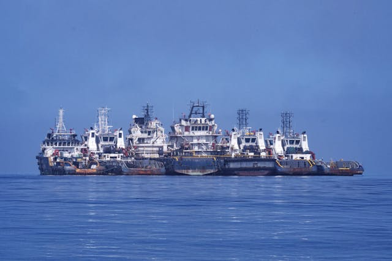

Periyodik Bakım ve Onarımın Önemi
Operasyonel Güvenilirlik & Sürdürülebilirlik

Stratejik Avantaj
Küçük arızaların erken tespiti, büyük çaplı onarımların önüne geçerek geminin hizmet dışı kalma süresini (downtime) minimize eder ve operasyonel maliyetleri düşürür.
Neden Periyodik Bakım?
Güverte makineleri; tuzlu su, yüksek nem ve sürekli titreşim gibi zorlu deniz koşullarında çalışır. Bu durum korozyon ve mekanik aşınmayı hızlandırır. Düzenli denetimler, hem mürettebat güvenliğini sağlar hem de SOLAS ve MARPOL gibi uluslararası yasal düzenlemelere uyumluluğu garanti altına alır.
Bakım Süreçlerimiz
- Detaylı hidrolik sıvı analizi ve filtrasyon
- Sızdırmazlık elemanları ve conta kontrolleri
- Hareketli aksam yağlama ve korozyon önleme
- Mekanik stres ve fonksiyonel güvenlik testleri
- Elektriksel bağlantı ve sensör kalibrasyonları
- Class onaylı teknik raporlama ve dökümantasyon